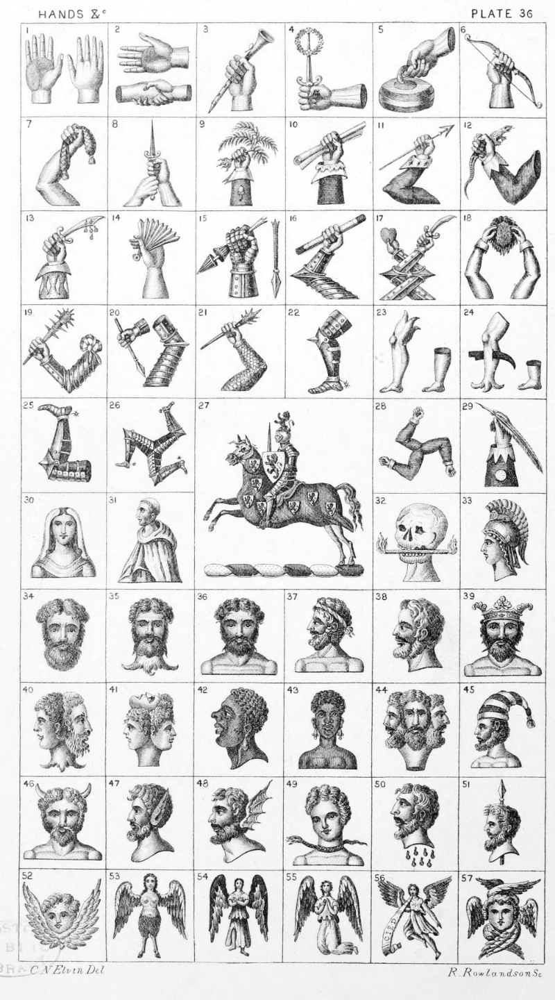

Plate 36.

Plate 36.
- A dexter hand apaumee couped at
the wrist, and a dexter hand
Aversant.
- A dexter hand couped in fesse, and
two hands conjoined in fesse, also
blazoned a dexter and sinister hand
couped at the wrist clasped.
Le Strange
- A hand holding a Clarionet. Fell
- A hand couped in fesse holding a
sword in pale supporting on the
point a Garland all ppr. Tipper
- A hand in bend sinister holding a
Curling-stone. Bidwell
- A sinister hand holding a Bow in
bend. Grimsby
- An arm embowed in hand a purse,
or a naked dexter arm embowed
in the hand a purse all ppr. Baker
- A dexter and sinister hand couped
supporting a sword in pale ppr.
Harbour
- A cubit arm erect vested az. cuffed
ar. charged with an acorn or, the
hand grasping a fern sapling of
New Zealand. Rhodes
- A cubit arm habited sa. cuffed ar.
shirt sleeve turned down and frilled
of the last holding in the hand a
roll of Parchment ppr. Kellet
- An arm embowed vested per pale
vert and gu. cuffed erm. holding
in the hand a spear ppr. Ffolkes
- An arm embowed resting on the
elbow vested gu. cuff indented
(Vandyked) ar. holding in the
hand a Lizard ppr. Macarthy
- A cubit arm vested or cuffed and
slashed (or puffed) ar. hand ppr.
holding a scimitar imbued gu.
hilt and pommel gold. Quincy
- A hand couped ppr. holding a Fan
displayed or. Fanmaker's Company
- A arm in armour gauntleted, grasping a broken tilting spear all ppr.
Purfoy
- An arm in armour embowed holding
in the hand ppr. a Baton or, ends
sa. Way.
- Two arms in armour embowed and
fretted, or two arms embowed in
armour fretted salterways, in the
dexter hand a scimitar and in the
sinister hand a heart all ppr.
O'Donel
- Two arms dexter and sinister embowed vested ar. holding in the
hands a scalp ppr. inside gu.
Huddleston
- An arm in armour couped embowed
resting on the elbow ppr. Sash tied
at the shoulder gu. and in the hand
a Spiked club of the first. Bult
- An arm in armour counter embowed
ppr. couped below the wrist, the
hand dropping, therein a spear
sa. Daunscourt
- An Arm in Mail armour counter-embowed holding in the hand ppr.
a Spiked club or. Bathurst
- A leg in armour ppr. couped at the
thigh gu. kneecap and spur or.
Eyre
- A human leg erased at the thigh ppr.
Rain, and a demi leg couped
- A leg couped at the thigh, erased at
the ancle ppr. pierced through the
calf with a coulter sa. and a Foot
couped
- A man's leg couped at the thigh
in armour ppr. garnished and
spurred or, embowed at the knee,
the foot upwards, the toe pointing
to the dexter. Haddon
- Three legs in armour conjoined in
the fesse point ppr. spurred and
garnished or. See Triquetra
- On a wreath of the colours, on a
horse in full gallop ar. bridled sa.
and with mantling gu. semee of
escutcheon's or, each charged with
a lion ramp, of the third ; a chevalier armed cap-a-pie ; on his helmet
his crest viz. a demi lion ramp,
gu., in his right hand a sword ppr.,
on his sinister arm, a shield charged
as the escutcheons. Crest of Duff
- Three arms embowed conjoined in
the fesse point ppr. habited az.
- A cubit arm erect habited az. charged
with a bezant, cuff indented ar. in
the hand a pen ppr. Aldridge
- A Nun's head, face and neck ppr.
with a white fall and dress.
Daveney
- A Demi Friar, or Hermit in profile,
vested and having a cowl or hood
- A Dead man's head, or Skeleton's
head couped ppr. holding in his
mouth a candle or, flammant at
both ends ppr. Bolney
- Minervas Head ppr. Leighton
- A Man's head affrontee ppr. Frost
- A Man's head affrontee erased at
the neck
- A Man's Bust, or a man's head
affrontee couped below the shoulders
- A Man's head in profile couped below
shoulders, or a Bust in profile
wreathed
- A Man's head in profile couped at
the neck
- A Man's head affrontee couped below
the shoulders and ducally crowned
- Janus's head
- Three heads conjoined in the neck
one looking to the dexter one to
the sinister and one upwards.
Morrison
- Moor's or Negroes Head in profile
couped at the neck
- A Negresses head affrontee couped
below the shoulders, with pendants
at ears all ppr. Amo
- Three mens' heads conjoined in one
neck, one looking to the dexter,
one affrontee, and one looking to
the sinister
- A Man's head in profile couped at
the Shoulders ppr. on his head an
Infular cap barry ar. and sa.
Everard
- A Whittals Head
- Man's head in profile with Ass's ears
couped at the neck also termed
Satyrs head and Midas head
- Man's head in profile with dragons
wings couped at the neck, called
Satans or Fiend's head
- A Child's head enwrapped round the
neck with a Snake. Vaughan
- Savages head couped at the neck in
profile distilling blood ppr. Edington
- A Spear in pale enfiled with a
savage's head couped at the neck
ppr. Cotton
- A Cherub, or. Overand
- A Cherubim
- See Angel in Dictionary
- See Angel in Dictionary
- See Angel in Dictionary
- Seraph, or Seraphim ppr. Carruthers